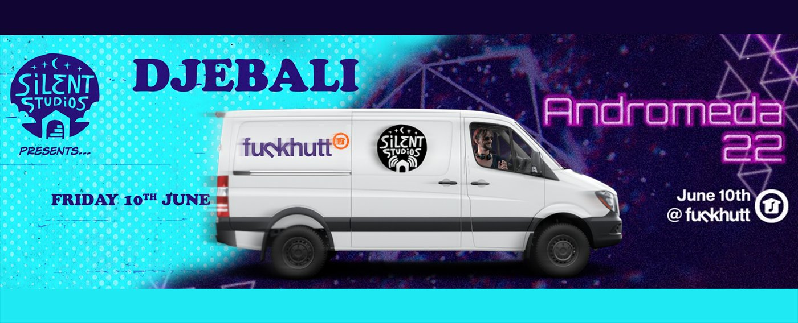
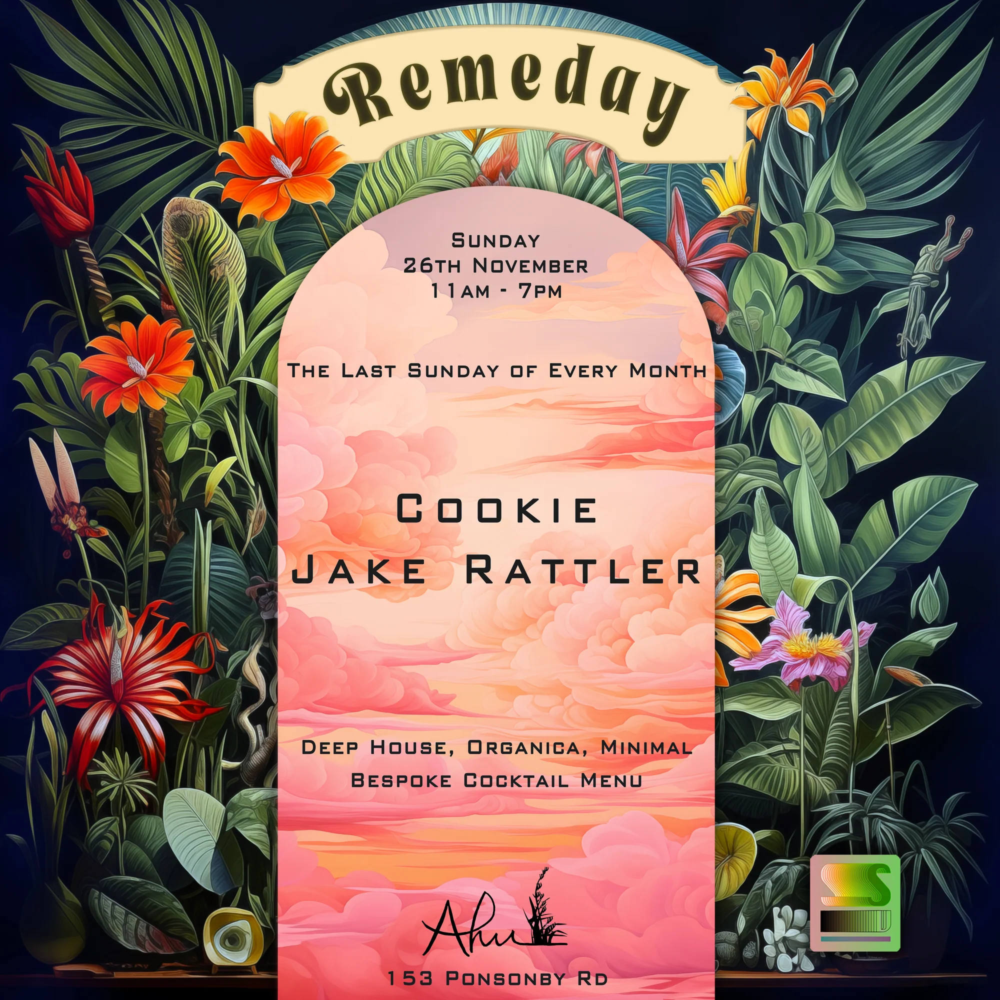
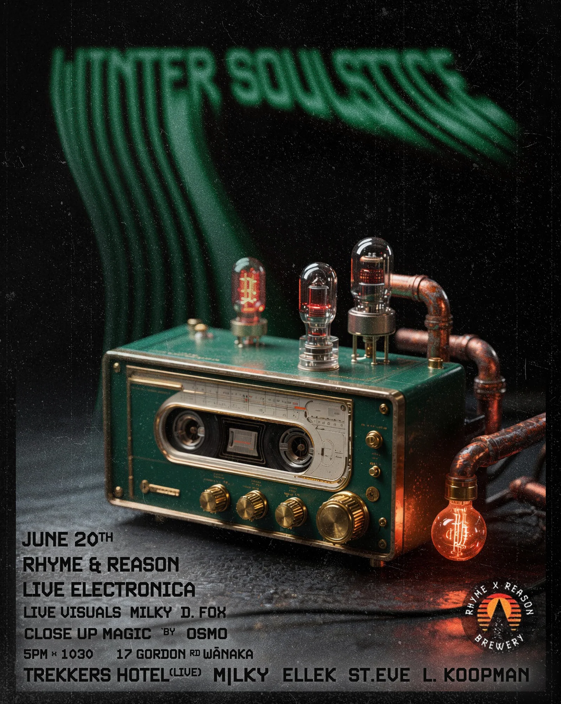
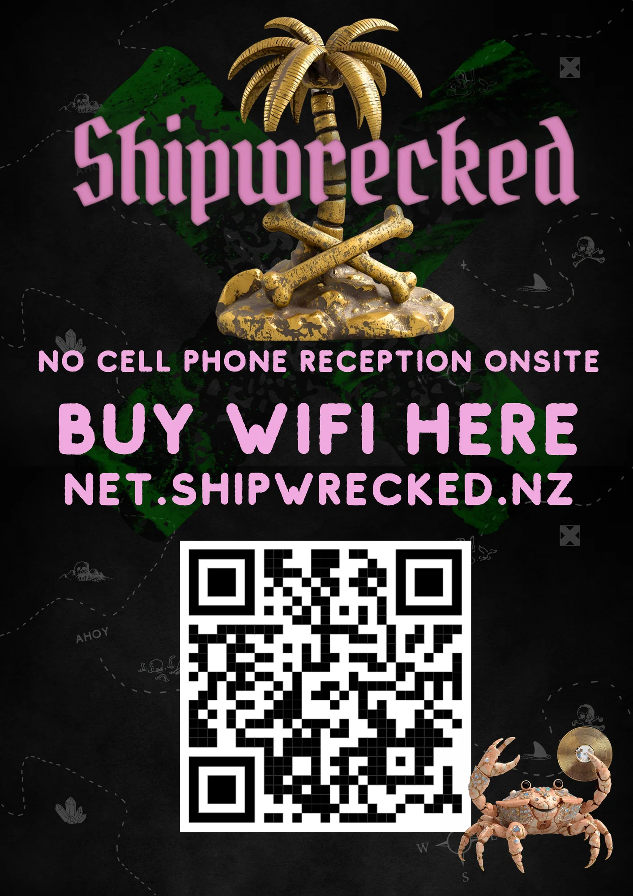
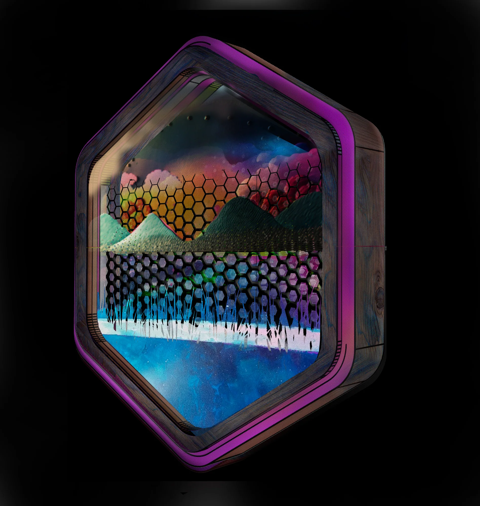
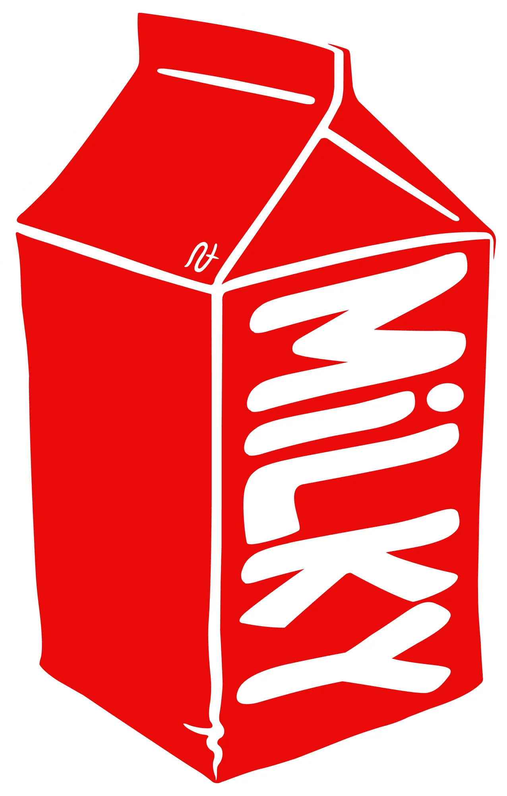
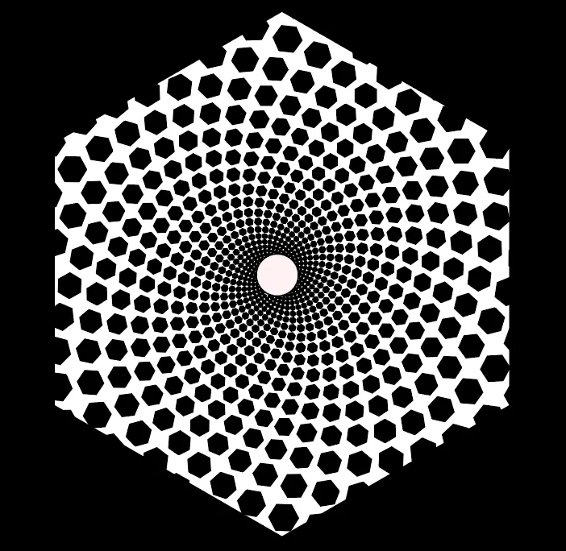
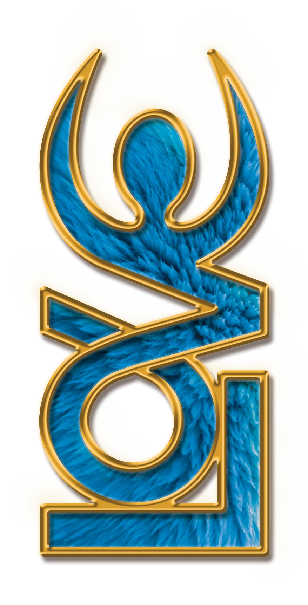
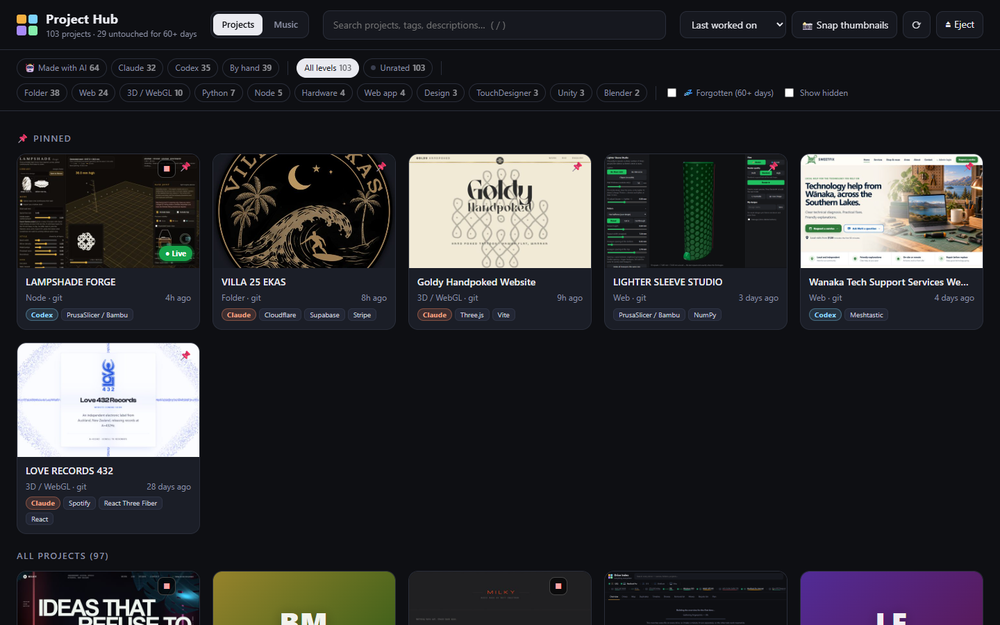
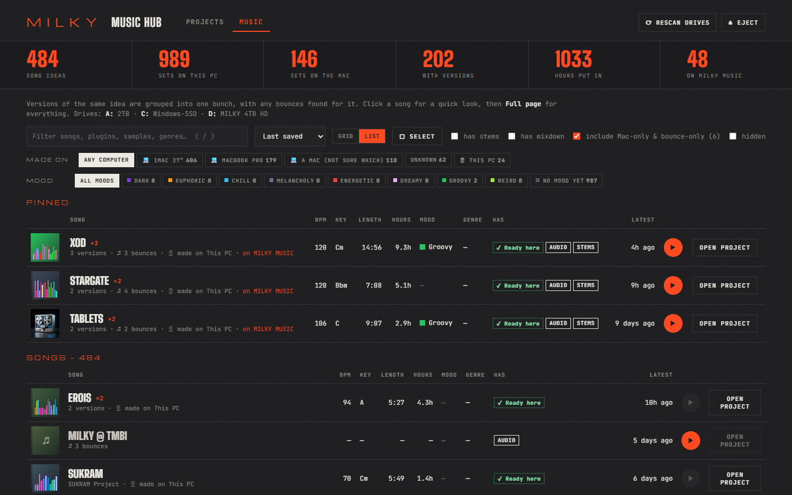

03 / Desktop access layer
Project Dock
A small Windows dock that keeps the whole system one click away. Together, the Hub, Music Hub and Dock form the beginnings of The Nest: a home-grown operating layer for creative life.
Growing a digital habitat
Independent digital studio
Aotearoa, New Zealand
Websites, identities and interactive systems with a pulse. Designed and built by one person, so the original idea survives all the way to launch.
Enter the work↘Selected work
Real things, running now
Every project below is made, shipped, and doing its job. The live sites are shown moving because the experience is the work—not a still frame of it.
Web / Identity / Catalogue
An independent record-label home with a living Chladni field behind the catalogue. One release, many storefronts, and no generic shop-template feeling.
Web / Hospitality / Live data
A black-and-gold digital home for a surf villa in Lombok, with a live marine forecast that makes the most important local information feel native to the brand.
Web / Artist / Booking
A quiet, tactile site for a hand-poke tattoo artist near Wānaka—warm paper, drawn knotwork and a booking path made for a small number of unhurried sittings.
Graphic design
Selected archive
Identity, typography, image-making and print—visual systems with enough character to work across posters, records, campaigns and physical spaces.

Custom type and composite image-making carrying one high-impact event campaign.

A botanical event identity balancing organic imagery with a direct promotional hierarchy.

Atmospheric image-making and type composed for electronic music at poster scale.

A practical information poster made specific to its place through character and imagery.




Recent work
A personal creative system
My latest work is less a single product than a connected place for everything I make: projects, unfinished ideas, music, tools and the paths between them.

A living index of more than one hundred projects. It finds work across my drives, makes it visual and searchable, and brings old experiments back into reach instead of letting them disappear into folders.
Local tools / Project memory / Search / Launch
An interface for years of Ableton sets and loose song ideas—grouping versions, bounces, stems, moods and time spent so the archive becomes something I can actually listen to and work from.
Ableton metadata / Audio / Archive / PublishingA small Windows dock that keeps the whole system one click away. Together, the Hub, Music Hub and Dock form the beginnings of The Nest: a home-grown operating layer for creative life.
Playable lab
Experiments with controls
These are small visual machines. Open one and change the outcome yourself—nothing below is a prerecorded trick.
A live image-making system for blending fields, type, texture and optical interference into repeatable graphic structures.
Open instrument ↗A responsive drawing instrument that turns mathematical curves and hand movement into changing ornamental forms.
Open instrument ↗A playable interference-pattern tool for shaping line density, movement and print-ready optical compositions.
Open instrument ↗A one-button arcade machine: custom image model, automated naming, and a new trading card in roughly forty seconds.
The studio
Small by design
I’m Milky, an Aotearoa-based designer, developer and music-maker. I started in graphic design and event artwork, then followed the work into websites, generative systems, AI image-making, custom desktop tools and physical installations. I like making the idea, the interface and the machinery underneath it feel like one thing.
Distinctive sites, catalogues and tools—designed, written, coded and launched as one system.
Web design / Development / CMS / PerformanceIdentity that survives contact with screens, print, packaging, vinyl, signage and real rooms.
Brand / Type / Print / Production artGenerative graphics and interaction that respond to a body, a sound, live data or a changing context.
Three.js / GLSL / TouchDesigner / SensorsA clear route through uncertain territory.
Get to the one idea the project cannot afford to lose.
Build the identity, type, motion and interaction around that signal.
Code it, test it on the real surface, launch it, and hand over something usable.
Based in Aotearoa
Working anywhere
Tell me what it is, where it needs to live, and roughly when you need it. You’ll get a straight answer from the person who would actually make it.
milkysbeta@gmail.com ↗ Message on WhatsApp ↗